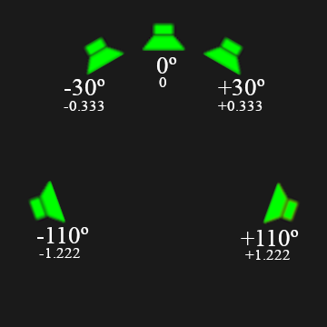

Thuộc tính Strip¶
- Type
Loại strip, được biểu thị bằng một icon.
- Name
Ô văn bản để chỉnh tên strip, hiển thị trên strip trong timeline.
- Color Tag
Mỗi strip được gán một Màu Mặc định dựa trên loại của nó; bằng color tag, bạn có thể gán màu tùy chỉnh để giúp tổ chức sequence.
- Mute
Bỏ chọn để ngăn strip tạo đầu ra.
Compositing¶
Tham khảo
- Panel:
- Blend
Phương pháp hòa trộn strip hiện tại với các strip ở kênh thấp hơn. Xem Blend Modes để biết thêm thông tin.
- Opacity
Độ mờ đục (alpha) của strip.
Khi thuộc tính này được animate, độ mờ được vẽ dưới dạng overlay trên strip. Overlay đó trông như một vùng tối đi theo đường cong animation. Nó có thể bị ẩn bằng cách tắt F-Curves.
Transform¶
Tham khảo
- Panel:
- Filter
Kỹ thuật dùng để ước lượng giá trị pixel tại các tọa độ không nguyên bên trong hình ảnh.
- Auto:
Tự động chọn filter dựa trên hệ số scale.
Không scale, không xoay, vị trí nguyên: Nearest
Phóng to hơn 2 lần: Cubic Mitchell
Thu nhỏ hơn 2 lần: Box
Trường hợp khác: Bilinear
- Nearest:
Không nội suy; dùng pixel lân cận gần nhất (nhanh nhất).
- Bilinear:
Nội suy giữa 2×2 mẫu.
- Cubic Mitchell:
Filter Cubic Mitchell trên 4×4 mẫu.
- Cubic B-Spline:
Filter Cubic B-Spline (mờ nhưng không rung chuông) trên 4×4 mẫu.
- Box:
Lấy trung bình các mẫu hình ảnh nguồn nằm dưới pixel đích.
- Position X, Y
Dùng để di chuyển khung hình dọc theo trục X và Y.
- Scale X, Y
Scale hình ảnh trên trục X và Y.
- Rotation
Xoay đầu vào hai chiều quanh trục Z.
- Mirror
Lật hình ảnh theo trục X (trái sang phải) hoặc trục Y (trên xuống dưới).
Crop¶
Tham khảo
- Panel:
Dùng để cắt xén hình ảnh nguồn. Dùng Top, Left, Bottom và Right để điều khiển số pixel bị cắt.
Video¶
Tham khảo
- Panel:
- Strobe
Hiển thị mỗi frame thứ n. Ví dụ nếu đặt là 10, strip sẽ chỉ hiển thị các frame 1, 11, 21, 31, 41... của nguồn.
Điều quan trọng là phải nhận ra thuộc tính này là giá trị float. Nhờ đó bạn có thể đồng bộ chính xác hiệu ứng nhấp nháy theo một nhịp.
- Reverse Frames
Phát strip ngược lại bắt đầu từ frame cuối trong sequence.
Color¶
Tham khảo
- Panel:
- Saturation
Điều chỉnh độ rực rỡ của màu sắc trong hình ảnh.
- Multiply
Nhân màu với giá trị này. Nó sẽ làm tăng độ sáng.
- Multiply Alpha
Nhân cả alpha cùng các kênh màu khi dùng tùy chọn Multiply.
- Convert to Float
Chuyển đầu vào thành dữ liệu float.
Sound¶
Tham khảo
- Panel:
Cách làm việc với âm thanh được ghi chép chi tiết hơn tại Sound Strip.
- Volume
Điều chỉnh độ lớn hoặc cường độ cảm nhận được của âm thanh.
Khi thuộc tính này được animate, âm lượng được vẽ dưới dạng overlay trên strip. Overlay đó trông như một vùng tối đi theo đường cong animation. Nó có thể bị ẩn bằng cách tắt F-Curves. Giá trị này cũng được phản ánh trong dạng sóng.
- Offset
Độ dịch chuyển của âm thanh tính từ điểm bắt đầu strip, tính bằng giây.
- Mono
Trộn tất cả kênh âm thanh thành một kênh duy nhất.


- Pan
Dùng để phân phối âm thanh giữa các loa trong âm thanh đa kênh. Chỉ nguồn mono mới có thể pan; nếu file nguồn không phải mono, hãy bật Mono để trộn các kênh lại.
Với stereo, pan của đầu ra chạy từ trái (-1), qua giữa (0), đến phải (1).
Tuy nhiên, với đầu ra vòm quanh (surround) có nhiều hơn hai loa, giá trị này biểu thị góc phát khi nhân với 90 độ. 0 độ là điểm ngay phía trước người nghe.
Như vậy, để phát qua các loa phía sau, bạn có thể pan với giá trị cao hơn. Lưu ý rằng -2 và 2 là giống nhau tại 180 độ sau lưng người nghe.
Ví dụ, âm thanh vòm 5.1 đặt loa trước lệch 30 độ và loa sau lệch 110 độ so với phương thẳng đứng (xem hình).
Mẹo
Để có animation mượt, bạn có thể gán giá trị ngoài giới hạn mềm, vì góc sẽ quấn quanh qua nhiều vòng xoay.
Ghi chú
Số kênh âm thanh có thể được cấu hình trong cài đặt Audio Output.
- Preserve Pitch
Khi bật, tùy chọn này giữ cao độ gốc của âm thanh ngay cả khi tốc độ phát của strip bị thay đổi. Khi tắt, chỉnh tốc độ phát của sound strip cũng làm thay đổi cao độ của nó (ví dụ phát chậm làm cao độ thấp xuống, phát nhanh làm cao độ cao lên).
Tùy chọn này hữu ích khi đồng bộ âm thanh với bản dựng video hoặc animation cần chỉnh thời lượng mà không ảnh hưởng đến tông nhạc.
- Display Waveform
Hiển thị dạng sóng xấp xỉ của file âm thanh bên trong Sound strip. Dạng sóng phản ánh âm lượng của strip và animation của nó bằng keyframe.
Âm thanh bị cắt (clip), tức giá trị vượt 100% biên độ, sẽ hiển thị màu đỏ.
Tùy chọn này chỉ hiển thị khi overlay Waveforms được đặt thành Strip.
Time¶
Tham khảo
- Panel:
Panel Time dùng để điều khiển vị trí nguồn và vị trí timeline của strip.
- Lock (icon ổ khóa trong header panel)
Ngăn strip bị di chuyển.
- Show Retiming Keys
Bật/tắt khả năng hiển thị và chọn của Retiming Keys.
- Channel
Thay đổi số kênh, hay hàng, của strip.
- Start
Thay đổi frame bắt đầu của strip, tương tự như chọn và di chuyển strip.
- Duration
Thay đổi độ dài (tính bằng frame) của strip. Thao tác này hoạt động bằng cách đổi frame kết thúc, tương tự như chọn và di chuyển tay cầm phải của strip.
- End
Hiển thị thời điểm kết thúc và frame kết thúc của strip.
- Strip Offset Start/End
Giá trị dương sẽ kéo các tay cầm của strip vào trong, khiến strip bắt đầu muộn hơn điểm bắt đầu của tư liệu nguồn và dừng trước điểm kết thúc của nó. Điều này cho phép bạn cắt gọn tư liệu nguồn xuống đúng phần cần dùng. Bạn có thể bật overlay Offsets để thấy điểm bắt đầu và kết thúc của toàn bộ file nguồn.
Giá trị âm sẽ đẩy các tay cầm của strip ra ngoài, khiến strip bắt đầu sớm hơn điểm bắt đầu của tư liệu nguồn và dừng sau điểm kết thúc của nó. Điều này cho phép bạn hiển thị frame đầu và/hoặc frame cuối dưới dạng hình ảnh đóng băng trong một khoảng thời gian.
Thay vì chỉnh các offset này trong Sidebar, bạn cũng có thể kéo các tay cầm của strip.
- Hold Offset Start/End
Dùng để cắt bớt frame ở đầu/cuối tư liệu nguồn. Nhìn đầu tiên thì nó làm giống thuộc tính Strip Offset, nhưng trên thực tế bạn có thể kết hợp cả hai để giữ (đóng băng) một frame khác ngoài frame đầu hoặc cuối. Ví dụ, nếu đặt Hold Offset Start là 10 và Strip Offset Start là -20, video sẽ trước tiên hiển thị frame thứ 11 của nguồn trong 21 frame, rồi sau đó phát các frame còn lại.
- Current Frame
Số frame của Playhead tính tương đối so với điểm bắt đầu của strip.
Source¶
Tham khảo
- Panel:
Panel Source hiển thị (và cho phép bạn thay đổi) file mà strip trỏ tới, cùng với cách file này được hiển thị.
- Directory
Thư mục chứa file nguồn của strip.
- Filename
Tên của file nguồn. Lưu ý tên file giới hạn 256 ký tự.
- Color Space
Color space của file nguồn.
Danh sách color space phụ thuộc vào OCIO config đang hoạt động. Các color space được hỗ trợ mặc định được mô tả chi tiết tại đây: Default OpenColorIO Configuration
- Alpha Mode
Nếu file nguồn có kênh Alpha (trong suốt), bạn có thể chọn giữa Straight Alpha và Premultiplied Alpha.
- Stream Index Movie Strip
Luồng video sẽ dùng, trong trường hợp có nhiều luồng.
- Deinterlace
Áp deinterlace cho video analog.
- Source Information
Hiển thị thông tin về media của strip.
- Resolution
Độ phân giải của đầu ra hình ảnh strip đang hoạt động.
- FPS Movie Strip
Tốc độ frame được mã hóa trong file video. Nếu giá trị này không khớp với Frame Rate của scene, tốc độ cảm nhận được của media sẽ sai trừ khi tốc độ được thay đổi để bù chênh lệch.
Tùy chọn cho Image Strip¶
- Directory
Thư mục chứa các file nguồn.
- Filename
Tên file nguồn. Với chuỗi hình ảnh, tên này sẽ khác nhau ở mỗi frame.
- Change Data/Files
Mở File Browser để bạn chọn một bộ hình ảnh mới (thay cho việc sửa các ô văn bản phía trên). Giống như .
Tùy chọn cho Sound Strip¶
- Sound
Menu Data-block để chọn âm thanh.
- File Path
Đường dẫn đến file được data-block âm thanh đã chọn sử dụng.
- Pack
Đóng gói âm thanh vào blend-file.
- Caching
File âm thanh được giải mã và nạp vào RAM.
- Source Information
Hiển thị thông tin về media của strip.
- Sample Rate
Số mẫu mỗi giây mà âm thanh được mã hóa.
- Channels
Số kênh âm thanh được mã hóa trong luồng âm thanh.